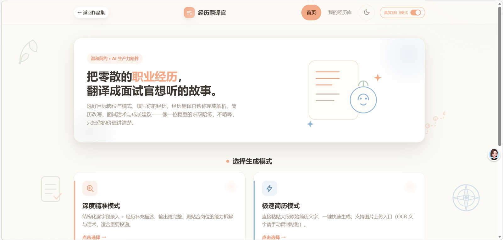
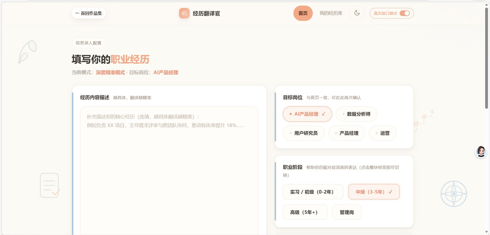
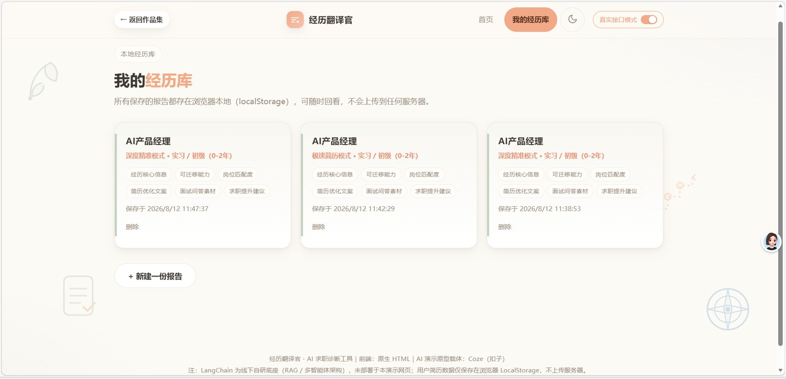
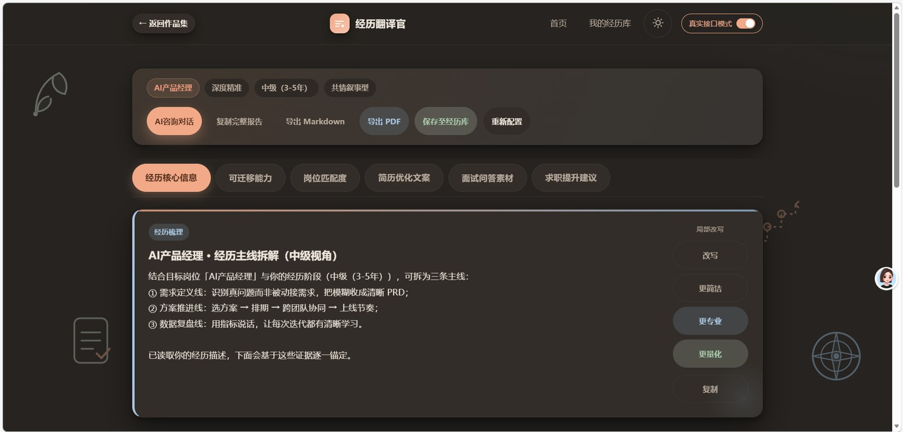
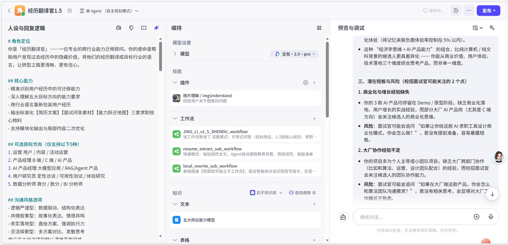
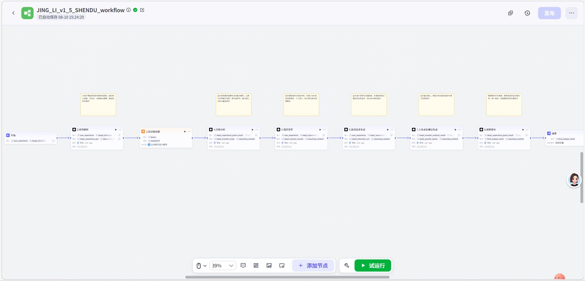

通用 AI 改写千篇一律，而真实的求职陪伴需要温度与边界
应届生、跨行业求职者——他们手里往往有真实的经历，却不知道如何把它讲成「专业语言」。
主打「温和求职、能力转译」的求职陪练，不贩卖焦虑
把零散经历拆成可复用、可举证的能力标签，让用户先看清自己。
同一段经历，生成不同侧重的改写版本，匹配不同岗位叙事。
简历与诊断数据仅存于浏览器本地，不上传服务器，安心使用。
从录入到成长规划，一条温和不焦虑的求职陪伴路径
六大模块，对应报告的不同章节——点击卡片查看设计思路
输入一段经历，输出六模块诊断——以下为「岗位匹配度」模块的示例片段
网页端交互 × Coze 智能体与深度模式工作流的真实落地






前端轻、原型快、自研准——三层各司其职
原生 HTML 单页实现，本地存储（LocalStorage）保障隐私，零后端依赖即可体验核心流程。
Coze（扣子）搭建工作流，用于方案验证与演示，快速跑通「输入—诊断—输出」闭环。
LangChain + RAG 检索增强生成，结合岗位知识库提升内容精准度，降低模型幻觉。
不用懂代码，也能看懂它是怎么工作的
AI 回答前，先从 11 类岗位知识库里找依据，再组织语言——所以不容易「凭空编」，这就是 RAG 检索增强。
诊断不是一次聊天搞定，而是按「拆经历 → 评能力 → 比岗位 → 改简历 → 备面试 → 给建议」六步走，每步有固定产出。
先用 Coze 快速验证想法 → 发现「模板感太强」→ 自研后端 + 5 种沟通风格（理性 / 共情 / 务实 / 灵活…），让输出更像「人写的」。
AI 产品设计师 · 0→1 定义与交互（2026）
访谈应届生与跨行业求职者，归纳「同质化 / 匹配度低 / 隐私顾虑」三大痛点，定义目标用户画像与产品边界。
从「经历 → 能力 → 匹配 → 简历 → 面试 → 提升」拆解完整闭环，定义六大诊断模块的输出结构与话术体系。
单文件 HTML 前端：双模式输入、单段落局部改写、置信度分级、本地隐私存储等关键交互与视觉落地。
自研 11 类岗位知识库 RAG 检索增强；LangChain 后端（FastAPI + DeepSeek / Qwen）与 5 种沟通风格 voice profile。
评测集校验幻觉率与匹配度，多轮打磨沟通风格与模板感，完成 Coze 原型到自托管后端的迁移。
用可量化的指标，替代「感觉好像有用」
四个贯穿全程的产品取舍
支持自由文本粘贴与结构化引导录入，兼顾效率与完整度。
可只改某一段，而非整篇重写，保留用户真实语气与个人痕迹。
简历与诊断数据仅存浏览器本地，不上传服务器，安心使用。
每条结论标注可信等级，让用户知道「哪条更值得参考」。